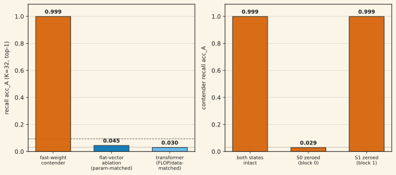
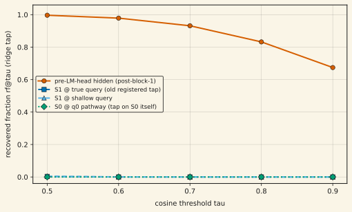

On high-load associative recall (K = 32 key→value bindings per episode, GPT-2 token entities) at 14M parameters, a fast-weight matrix-state model reads episode-restricted top-1 recall of 0.999 where a param-matched flat-vector ablation reads 0.045 and a FLOP/data-matched transformer reads 0.030 — chance is 0.031. The separation over both baselines exceeds 0.95, more than three times the pre-registered 0.30 win margin. A state-zeroing localization then asks where the binding lives: zeroing the block-0 fast-weight state S₀ alone collapses recall to 0.029; zeroing the block-1 state S₁ changes nothing (Δ = 0.000). Yet no linear tap on either raw state clears the strict recovery threshold — including a tap on S₀ itself. The binding is causally in S₀ but only becomes linearly decodable after the model's own downstream nonlinear processing (pre-LM-head rf@0.9 = 0.674, contender only; the ablation reads 0.0 at the same tap). The pre-registered 27-cell n=3 confirmatory sweep has now landed and CONFIRMS the separation: contender acc_A = [0.9995, 1.0000, 0.9990] across three fresh training seeds; ablation [0.0322, 0.0327, 0.0369]; transformer [0.0271, 0.0293, 0.0286]; paired-seed CIs on both gaps — (0.958, 0.973) vs the ablation, (0.969, 0.974) vs the transformer — exclude the frozen 0.30 win margin. Unpublished.
01Setup
Task 1 of the head-to-head campaign is MQAR-style single-hop recall: bind K = 32 entity key→value pairs (real GPT-2 token IDs), then query one key. The pre-registered load point is K/d_state = 0.5 at d_state = 64. Three arms, matched at 14M-parameter scale:
- Contender: a two-block DeltaNet-family LM (frozen-bias construction, per-token arm, λ = 0.58) whose mixer carries a d_state × d_state fast-weight matrix state per block, updated by the delta rule St = St−1(I − β kt kt⊤) + β vt kt⊤. Config d_model 256, 2 layers, d_state 64; 14,048,896 params; total recurrent state 32 KB, constant in context length.
- Ablation: param-matched (≤1%) flat-vector recurrence — same embedding, head, and FFN, but the outer-product state update is replaced by a gated elementwise vector update with a Hadamard read. Same d_state = 64.
- Transformer: GPT-2-style causal decoder with RoPE, FLOP-matched within 5%, same corpora/token/step budget, LR grid frozen at calibration, evaluated here with full uncapped attention.
The metric of record, acc_A, is episode-restricted K-way top-1 accuracy at the query position, read through each arm's own LM head with K-restricted decoding. Chance = 1/32; the demonstration bar is 3× chance. Eval is a pinned query set, n = 4096 queries per cell.
02The separation

Both baselines sit below the demonstration bar; the contender is 0.95+ above both. The pre-registered win margin for this comparison was 0.30. The transformer failure is a within-budget result: at this matched param count, token budget, and training compute, full attention did not learn the task — the claim does not extend to a differently-scaled or differently-trained transformer without its own matched re-run.
02bThe n=3 verdict of record (added July 10)
The margins were frozen to a token file before the first sweep cell launched (pinned 2026-07-09T21:38:00Z, enforced in code per cell). The 27-cell sweep — 3 architectures × 3 tasks × 3 fresh training seeds, identical pinned eval episodes across arms — completed cleanly and was scored under the frozen tiers:
- Per-seed acc_A, task 1 (K=32): contender [0.9995, 1.0000, 0.9990] (every seed ≥10.7× the demonstration bar); ablation [0.0322, 0.0327, 0.0369]; transformer [0.0271, 0.0293, 0.0286] — neither baseline clears the bar at any seed.
- Paired-seed CIs (t, df=2): contender−ablation gap mean 0.9656, CI (0.9582, 0.9729); contender−transformer gap mean 0.9712, CI (0.9686, 0.9738). Both exclude the pre-registered 0.30 margin — the frozen WIN condition is met. The pre-registered n=3→9 seed extension trigger (any seed below the bar, or a CI straddle) did not fire.
- Mechanism check at n=3: zeroing S₀ collapses recall at every contender seed (to 0.034 / 0.001 / 0.0002); no hard-stop fired on any of the 12 recurrent-arm cells. One disclosed instrument edge case: at the seed reading exactly 1.0, the pinned binomial σ is 0 by construction, so its S₁-zeroing "unchanged" band (Δ = 0.005, recall still 0.995) is unpassable by definition rather than failed in substance.
Raw per-cell JSONs, the frozen-margins token, and the exact eval and CI scripts are archived under experiment-runs/2026-07-10_h2h_sweep_harvest/.
03Where the binding lives: the S₀ mechanism
Earlier instrument calibration in this campaign repeatedly failed to decode bindings from the fast-weight state, which looked like a capability problem. The localization experiment shows it was a wrong-layer, wrong-format instrument problem.
Causal necessity. Zeroing S₀ (block 0's cached state) at the end of the bind phase collapses contender recall from 0.999 to 0.029 — chance. Zeroing S₁ (block 1's state, the layer every prior instrument had tapped) leaves recall exactly unchanged. All of the causally necessary binding information lives in S₀.
Linear legibility. A closed-form ridge tap (24,576 fit points, 4,096 held-out) at four placements:

04Caveats — read before citing
- Seed count — resolved. The July 9 version of this page was a single-seed calibration preview. The pre-registered 27-cell sweep has since landed (section 02b): the separation is confirmed at n=3 fresh seeds with paired CIs excluding the 0.30 margin, and the extension trigger did not fire. Figures 1-2 still show the round-4 single-seed data they were generated from; the sweep numbers are in section 02b and the archived JSONs.
- The Nichani caveat. "Recall" here is episode-restricted top-1 retrieval under argmax decoding, and under argmax a rank-1 state can support ≈d associations (Nichani, Lee & Bietti, ICLR 2025, arXiv:2412.06538). Nothing on this page is a rank-necessity or storage-capacity claim; the strict continuous-recovery machinery lives in a separate program. The honest continuous-recovery bound is fig 2's pre-LM-head curve: rf@0.9 = 0.674 — real but partial.
- Multi-hop is unresolved — and got more interesting. Task 2 (multi-hop recall) was pre-registered as a joint-failure tie from the calibration read (acc_A = 0.038). The sweep's fresh-seed retrains complicate that: one of three contender seeds reaches acc_A = 0.334 (10.7× chance) while the other two seeds and every baseline arm stay at chance — strict tier arithmetic reads INDETERMINATE (the CI straddles ±0.30), and the partial success does not generalize to held-out hop depths (0.011 on hops 3-4). This is evidence the task-2 failure is a trainability/seed-variance problem rather than a hard capability boundary; a diagnosis round is pending. Task 1 is the pre-registered primary; task 2's status is disclosed whenever it is named.
- Scale. 14M-parameter calibration cells only. Nothing here extends beyond this rung until the ladder runs.
- The contender's construction is itself under adjudication. The per-token frozen-bias arm used here is validation-loss-neutral at 14M but its write-geometry effects at scale are an open question in a parallel campaign (see the write-geometry attractor note). It is one configuration under test, not a resolved fix.
05Reproducibility
Raw result JSONs and manifests are archived in the project repository under experiment-runs/2026-07-09_h2h_tap_localization/ (tap and zeroing legs), experiment-runs/2026-07-09_h2h_sweep_launch/round4_inputs/ (the three calibration cells; SSD archive), and experiment-runs/2026-07-10_h2h_sweep_harvest/ (the 27 sweep training JSONs, the 18 verdict-grade eval JSONs, the frozen-margins token, md5 manifests, and the exact eval + CI scripts). The figure-generation script for this page is at assets/plots/generate_fast_weight_recall.py.